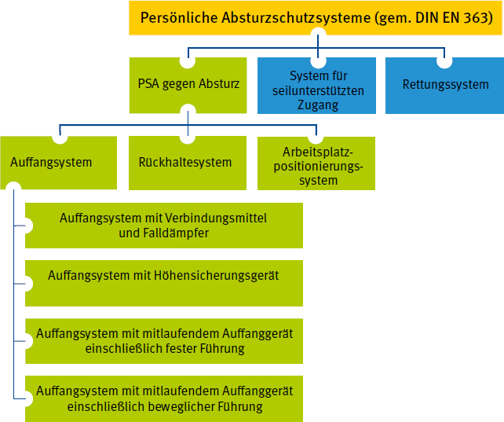

PSA gegen Absturz sind ein Teilbereich der persönlichen Absturzschutzsysteme. Persönliche Absturzschutzsysteme sind Systeme, die Personen vor dem Abrutschen oder Abstürzen bewahren oder abstürzende Personen sicher auffangen sowie eine sichere Rettung gewährleisten. Zu PSA gegen Absturz gehören Rückhaltesysteme, Arbeitsplatzpositionierungssysteme und Auffangsysteme.
Ausführliche Informationen zu Rettungssystemen enthält die DGUV Regel 112-199 "Retten aus Höhen und Tiefen mit persönlichen Absturzschutzausrüstungen", zu Systemen für seilunterstützten Zugang die DGUV Information 212-001 "Arbeiten unter Verwendung von seilunterstützten Zugangs- und Positionierungsverfahren".
In dieser Regel werden Systeme der PSA gegen Absturz sowie die Eigenschaften und Grundlagen für Bestandteile beschrieben, die in diesen Systemen Verwendung finden.
Die Systeme umfassen eine Körperhaltevorrichtung und ein Befestigungssystem.
Das Befestigungssystem kann aus einem oder mehreren im System verwendeten Bestandteilen (z. B. Verbindungsmittel, Verbindungselemente, Auffanggeräte, Anschlageinrichtungen) bestehen.
